forms-admin sobre el cluster forms_report: la base que usan Forms y Reports
Guía paso a paso para preparar la infraestructura en AWS (imagen en ECR, cluster
forms_report, EFS rector-dev, security groups y rol de tarea) y crear la
task definition forms-admin y su servicio, registrado en Cloud Map como
weblogic-admin.forms.local.
Es el primer contenedor que se despliega: aloja el AdminServer y el Node Manager de
AdminServerMachine del dominio forms_domain en EFS. Los servicios
Forms y Reports reutilizan todo lo que se crea aquí.
forms-admin (revisiones :5/:6). Capturas de la task definition: hechas; servicio y verificación: pendientes.
Valores de referencia para todo el despliegue. Anotarlos antes de entrar a la consola.
| Concepto | Valor |
|---|---|
| Cuenta / región | 730335573515 · us-east-1 |
| Repositorio ECR | 730335573515.dkr.ecr.us-east-1.amazonaws.com/forms-docker |
| Cluster | forms_report (Fargate) |
| EFS | fs-08471cc88d2a8edc3 (rector-dev) |
| VPC | vpc-055a4007418b34e64 |
| Subnet | Solo pública: subnet-01212efd4a9ce759b (pub-A-SN) |
| SG tarea | sg-0e1787d32bac71fcd (forms-sg-ecs) |
| SG del EFS | sg-0e39a7aa49ff6a22b (NFS 2049 desde forms-sg-ecs) |
| Rol ejecución | ecsTaskExecutionRole |
| Rol tarea (Exec) | ecs-forms-admin-task-role |
| Familia TD / servicio / contenedor | forms-admin / forms-admin / admin |
| Namespace Cloud Map | forms.local (ns-r3zqawwpjtp5pzue) |
| Service Discovery | weblogic-admin → weblogic-admin.forms.local |
| Log group | /ecs/forms-admin |
/domain):/aws-backup-restore_2020-04-19T22-54-07-041Z/domain_forms/domains/aws-backup-restore_2020-04-19T22-54-07-041Z/domain_forms/app/aws-backup-restore_2020-04-19T22-54-07-041Z/domain_forms/scripts/admin
Antes de crear el cluster y la task definition, dejar listas las piezas compartidas por los tres
contenedores (admin, forms y reports): la imagen en ECR, el security group de las tareas, el EFS del dominio, el rol de tarea para ECS Exec y el namespace Cloud Map forms.local.
Subir a ECR la imagen construida en la fase Crear la imagen. Los tres servicios (admin, forms, reports) usan la misma imagen.
aws ecr get-login-password --region us-east-1 \ | docker login --username AWS --password-stdin 730335573515.dkr.ecr.us-east-1.amazonaws.com docker tag <imagen-local>:<tag> 730335573515.dkr.ecr.us-east-1.amazonaws.com/forms-docker:<tag> docker push 730335573515.dkr.ecr.us-east-1.amazonaws.com/forms-docker:<tag>
Anotar el digest (sha256:…) resultante; la task definition lo referencia por digest.
forms-sg-ecs
EC2 → Red y seguridad → Grupos de seguridad →
Crear grupo de seguridad, en la VPC
vpc-055a4007418b34e64 (vpc-Banesco-Seguros-VE-dev).
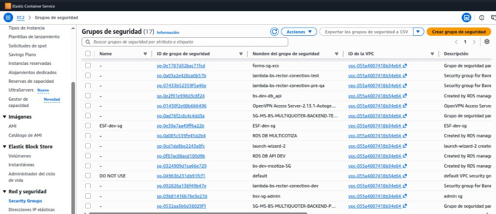
sg-0e1787d32bac71fcd)| Campo | Valor |
|---|---|
| Nombre | forms-sg-ecs (no se puede editar después) |
| Descripción | Grupo de Seguridad Forms reports |
| VPC | vpc-055a4007418b34e64 (vpc-Banesco-Seguros-VE-dev) |
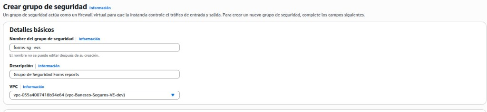
forms-sg-ecs| Regla | Protocolo / puerto | Origen / destino | Uso |
|---|---|---|---|
| Entrada | TCP personalizado · 7001 | 0.0.0.0/0 (descripción: Admin HTTP access) | Consola WebLogic / EM |
| Entrada | Todo el tráfico (TCP + UDP) | sg-0e1787d32bac71fcd (el propio SG) | Node Manager 5556, managed servers, Coherence UDP 7574 |
| Salida | Todo el tráfico | 0.0.0.0/0 | ECR, CloudWatch Logs, SSM (ECS Exec), EFS, BD |
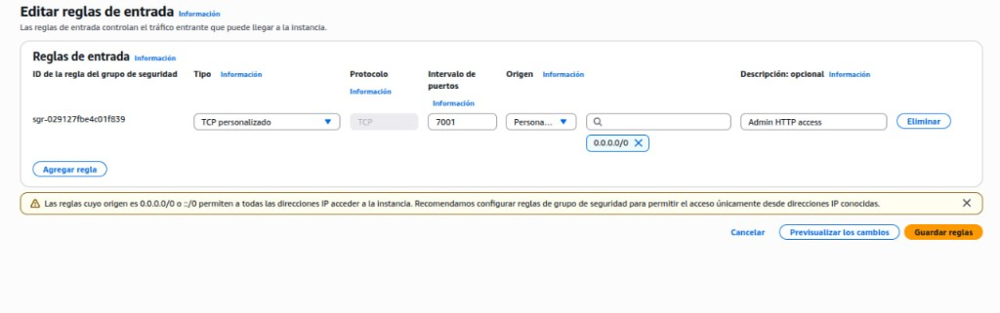
0.0.0.0/0 en el puerto 7001 (útil en pruebas). En entornos más
restringidos conviene limitar a la IP de administración (x.x.x.x/32).
Además, hace falta la regla interna Todo el tráfico con origen el propio SG
(aún sin captura) para Node Manager, managed servers y Coherence UDP 7574.
default sin reglas de salida: la tarea no llega a la API de ECR y falla con
GetAuthorizationToken … i/o timeout.
rector-dev y NFS 2049
Amazon EFS → Sistemas de archivos → rector-dev
((fs-08471cc88d2a8edc3). Debe estar Disponible y con mount target
en la AZ de pub-A (us-east-1a / subnet-01212efd4a9ce759b).
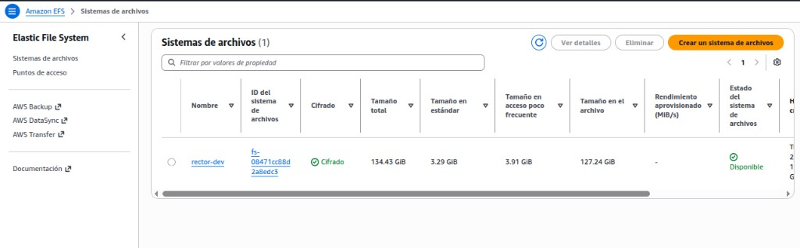
rector-dev · fs-08471cc88d2a8edc3
Abrir el filesystem → pestaña Red. Los tres mount targets usan el SG
sg-0e39a7aa49ff6a22b (ESF-dev-sg). El de us-east-1a
es el que usa la subnet pub-A del servicio ECS.
| AZ | Mount target | Subnet | IPv4 | SG |
|---|---|---|---|---|
us-east-1a | fsmt-0dc55df458eb25a93 | subnet-01212efd4a9ce759b (pub-A) | 10.171.240.61 | ESF-dev-sg |
us-east-1b | fsmt-0b050d2db426b56ca | subnet-02fdd714e2380c094 | 10.171.245.64 | ESF-dev-sg |
us-east-1c | fsmt-017f3ebaf042ff175 | subnet-01ff1bc9436131367 | 10.171.245.178 | ESF-dev-sg |
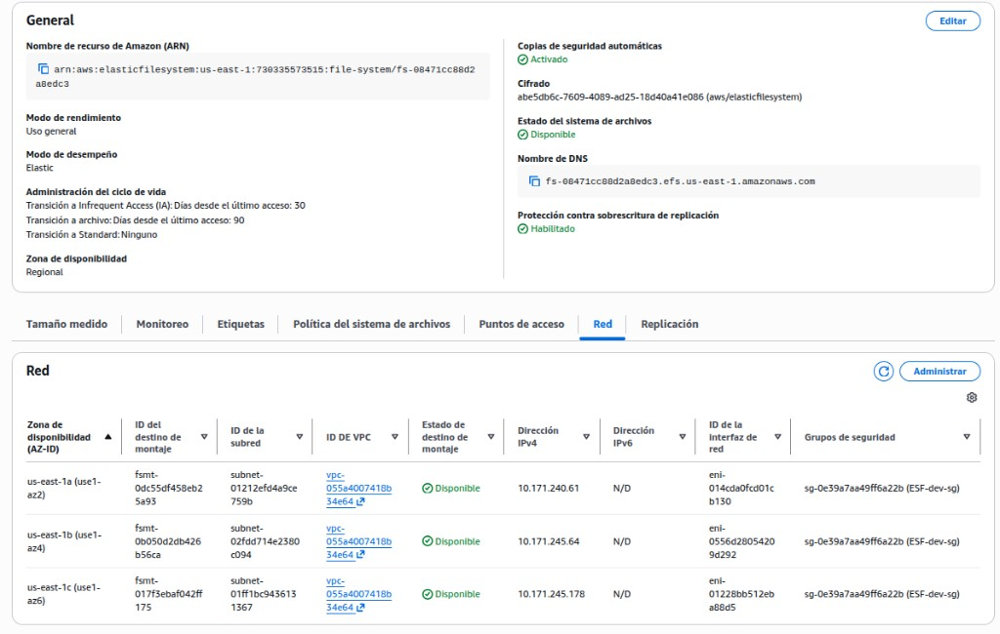
Desde Administrar se confirma la VPC
vpc-055a4007418b34e64 (vpc-Banesco-Seguros-VE-dev) y el SG
ESF-dev-sg en cada AZ.
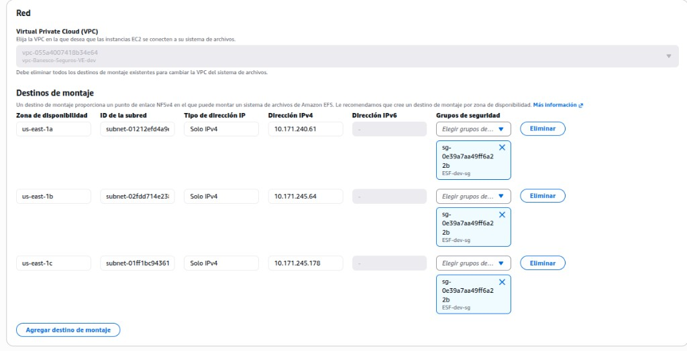
sg-0e39a7aa49ff6a22b (ESF-dev-sg)forms-sg-ecs (sg-0e1787d32bac71fcd)domain_forms/domains, app y scripts/admin
bajo /aws-backup-restore_2020-04-19T22-54-07-041Zmount.nfs4: Connection timed out.
En la captura hay varias reglas NFS 2049; la crítica para ECS Forms es la del origen
sg-0e1787d32bac71fcd.
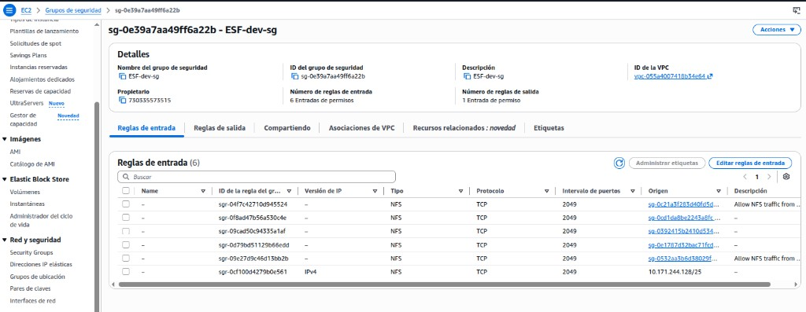
ESF-dev-sg · NFS 2049 (incluye origen forms-sg-ecs)
ECS Exec exige un rol de tarea. El rol de ejecución solo descarga la imagen y escribe logs;
el rol de tarea es el que permite execute-command.
IAM → Roles → Crear rol.
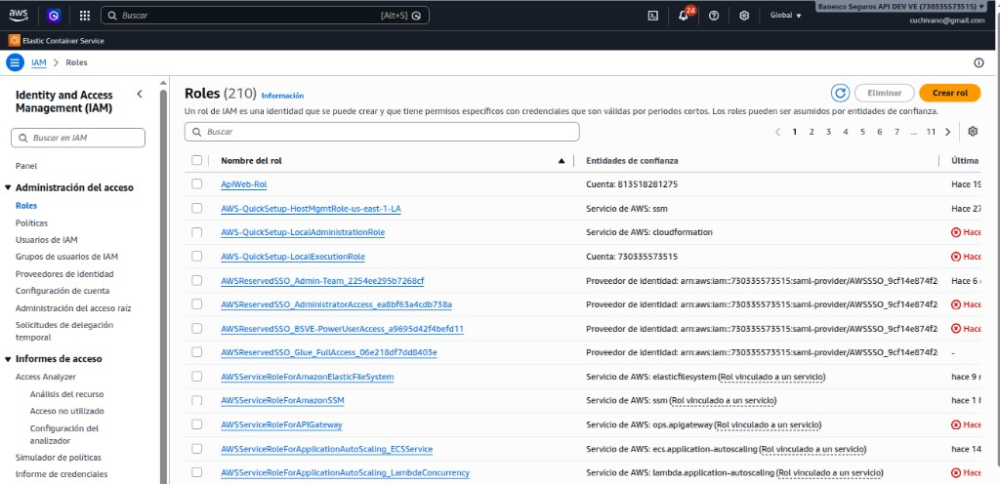
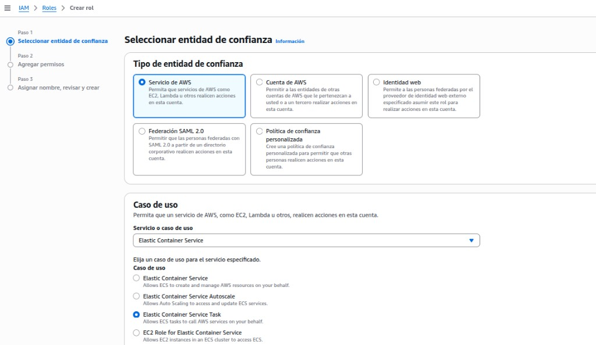
En este paso se puede continuar sin políticas administradas y, tras crear el rol, agregar una política en línea mínima para ECS Exec:
{
"Version": "2012-10-17",
"Statement": [{
"Effect": "Allow",
"Action": [
"ssmmessages:CreateControlChannel",
"ssmmessages:CreateDataChannel",
"ssmmessages:OpenControlChannel",
"ssmmessages:OpenDataChannel"
],
"Resource": "*"
}]
}
En Agregar permisos: dejar Usar política existente,
no marcar ninguna política administrada y pulsar Siguiente.
La política ssmmessages se agrega después como política insertada (o elegir
Crear política insertada en esta misma pantalla).
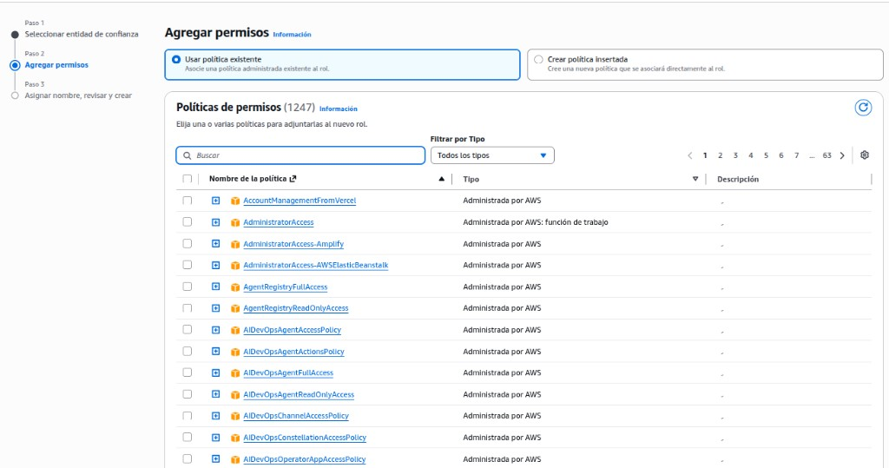
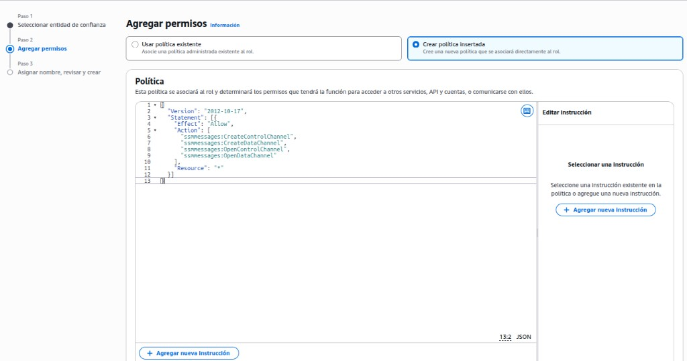
| Campo | Valor |
|---|---|
| Nombre del rol | ecs-forms-admin-task-role |
| Descripción | Allows ECS tasks to call AWS services on your behalf. |
| Política de confianza | ecs-tasks.amazonaws.com → sts:AssumeRole |
| Política insertada | ecs-forms-admin-task-rolePolicy · SSM Messages |
| Etiquetas | ninguna (opcional) |
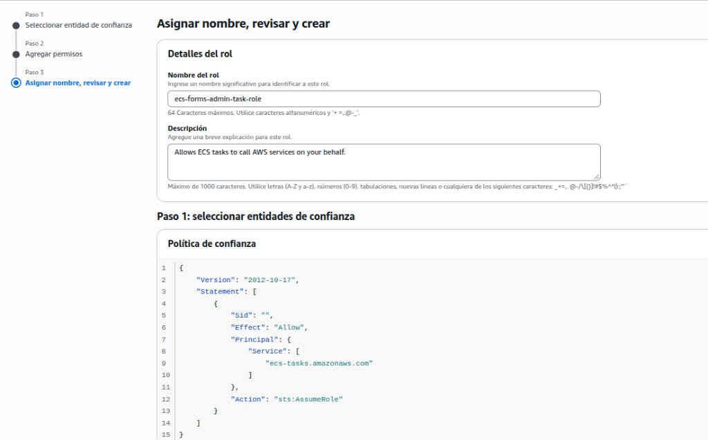
ecs-forms-admin-task-role y confianza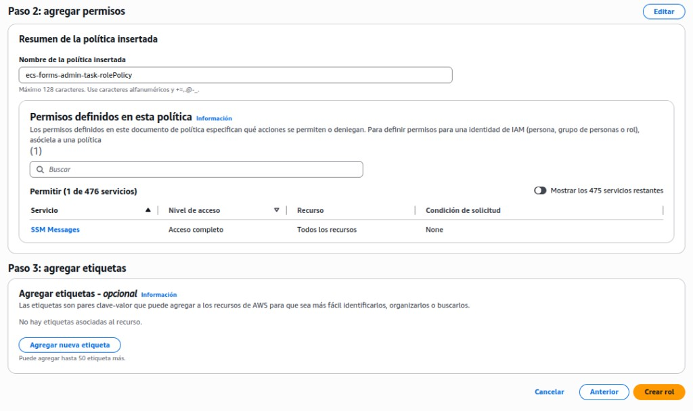
forms.localPendienteforms.localvpc-055a4007418b34e64Resultado: namespace ns-r3zqawwpjtp5pzue. Se crea una sola vez y lo comparten admin, forms y reports. Puede hacerse antes del cluster y de la task definition; Service Discovery se asocia después, al crear cada servicio ECS.
forms_reportHechoforms_reportforms.local se asocia en el Paso 4)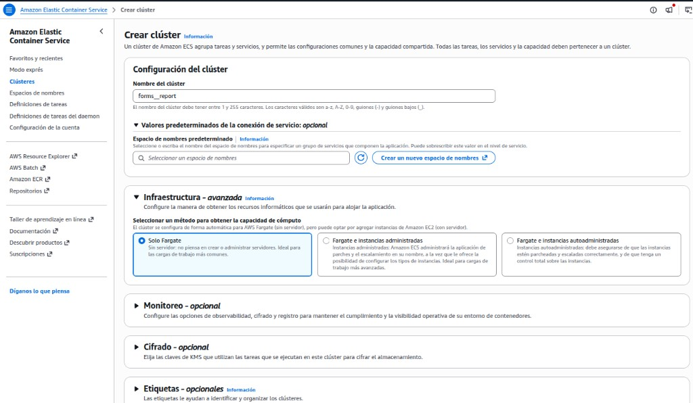
forms_report · Solo FargateAl crearlo, la página del cluster muestra el estado Activo. Los contadores de servicios y tareas quedan en 0 hasta crear los servicios; con admin, forms y reports desplegados se ven 3 servicios activos y 3 tareas en ejecución, como en la captura.
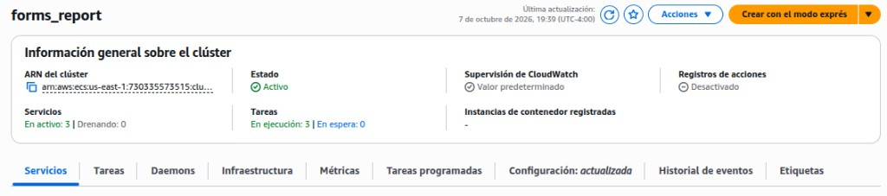
forms_report
ECS → Definiciones de tareas → Crear nueva definición de tarea
(o Crear nueva revisión si la familia ya existe). Familia:
forms-admin. Los subpasos siguientes siguen el orden del asistente de la consola.
| Campo | Valor |
|---|---|
| Familia | forms-admin |
| Tipo de lanzamiento | AWS Fargate |
| Sistema operativo / arquitectura | Linux / X86_64 |
| Modo de red | awsvpc (fijo en Fargate) |
| CPU / memoria | 2 vCPU / 4 GB |
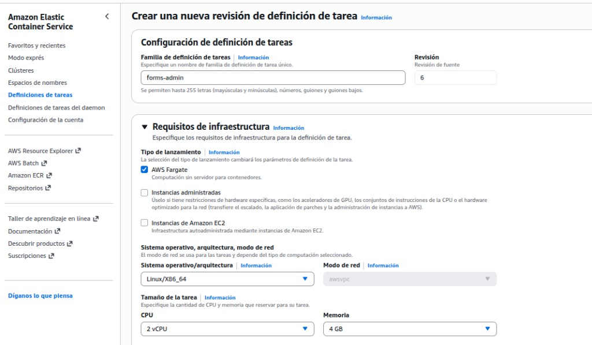
| Campo | Valor |
|---|---|
| Rol de tarea | ecs-forms-admin-task-role |
| Rol de ejecución | ecsTaskExecutionRole |
| Inyección de errores | deshabilitada |
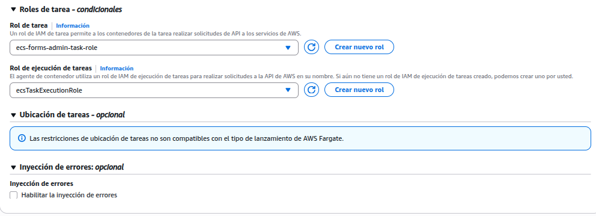
| Campo | Valor |
|---|---|
| Nombre | admin (esencial: Sí) |
| URI de imagen | 730335573515.dkr.ecr.us-east-1.amazonaws.com/forms-docker@sha256:… |
| Autenticación de registro privado | desactivada (ECR usa el rol de ejecución) |
| Puerto | Nombre | Uso |
|---|---|---|
| 7001 | adminserver | AdminServer (consola, EM, t3) |
| 9002 | adminport | Puerto de administración |
| 5556 | nodemanager | Node Manager de AdminServerMachine |
| 7777 | ohshttp | OHS HTTP (reservado) |
| 4443 | ohshttps | OHS HTTPS (reservado) |
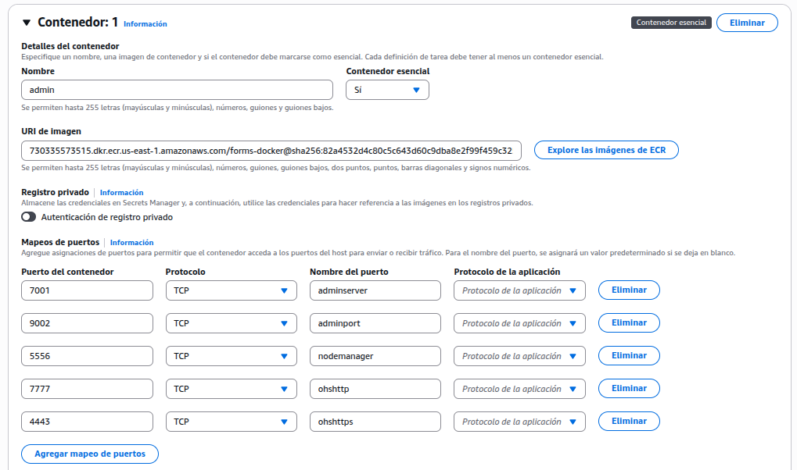
admin, imagen y puertos| Variable | Valor |
|---|---|
ORACLE_HOME | /u01/oracle |
DOMAIN_NAME | forms_domain |
DOMAIN_HOME | /u01/oracle/user_projects/domains/forms_domain |
ADMIN_PORT | 7001 |
NODE_MANAGER_PORT | 5556 |
LD_LIBRARY_PATH | /u01/oracle/lib:/u01/oracle/oracle_common/lib |
PATH en la task definition: eliminar esa variable
(o incluir las rutas del sistema). Un PATH solo con rutas Oracle rompe
sleep y el shell. Comprobar también que DOMAIN_HOME no quede truncado
a /u01/oracle/user_project.
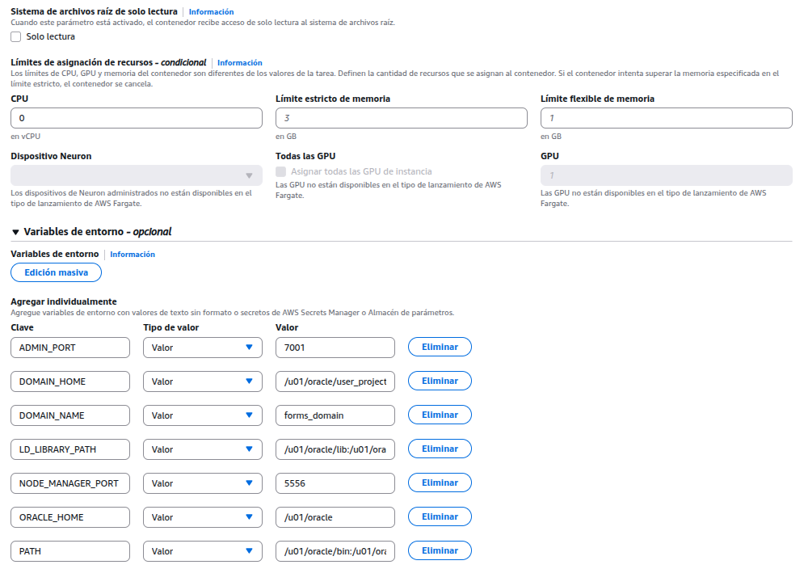
| Campo | Valor |
|---|---|
| Recopilación de registros | Amazon CloudWatch |
awslogs-group | /ecs/forms-admin |
awslogs-create-group | true |
awslogs-region | us-east-1 |
awslogs-stream-prefix | ecs |
| Punto de entrada | (vacío) |
| Comando | sleep,infinity |
| Directorio de trabajo | /u01/oracle |
Con sleep infinity el contenedor queda vivo para ECS Exec y arranque manual.
Cuando el dominio y el DNS estén estables se puede cambiar por
/u01/oracle/scripts/entrypoint_persistente.sh (nueva revisión).
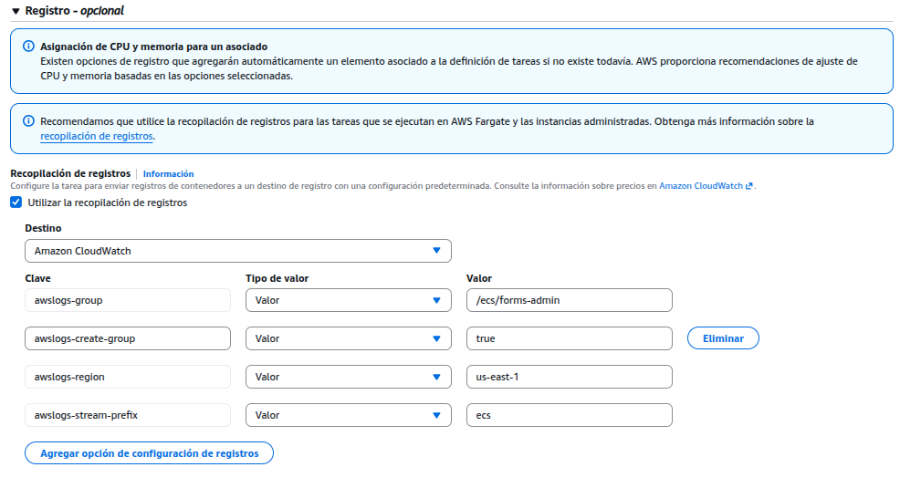
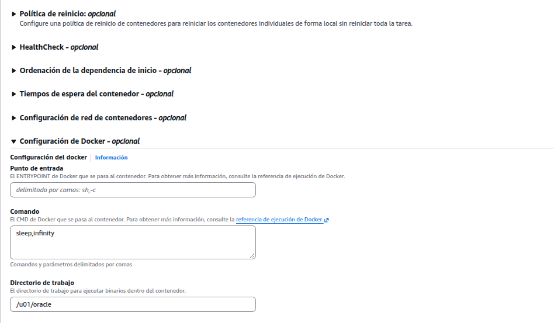
Almacenamiento efímero: 100 GiB (el valor por defecto de 20 GiB no alcanza para extraer la imagen).
Tres volúmenes EFS, tipo EFS, filesystem rector-dev (fs-08471cc88d2a8edc3),
punto de acceso Ninguno. En Configuraciones avanzadas dejar
cifrado en tránsito habilitado.
| Volumen | Directorio raíz |
|---|---|
efs-domains | /aws-backup-restore_2020-04-19T22-54-07-041Z/domain_forms/domains |
efs-app | /aws-backup-restore_2020-04-19T22-54-07-041Z/domain_forms/app |
efs-scripts | /aws-backup-restore_2020-04-19T22-54-07-041Z/domain_forms/scripts/admin |
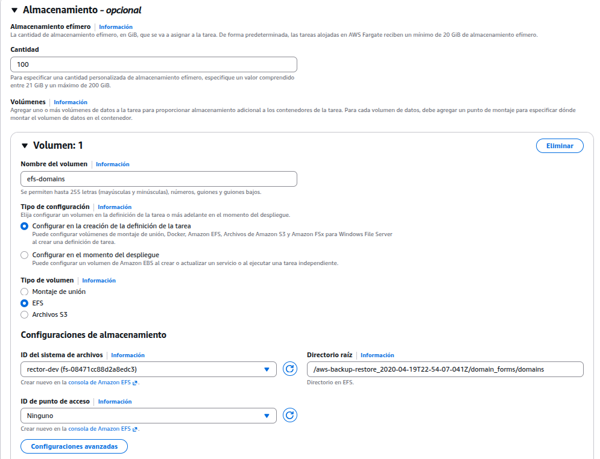
efs-domains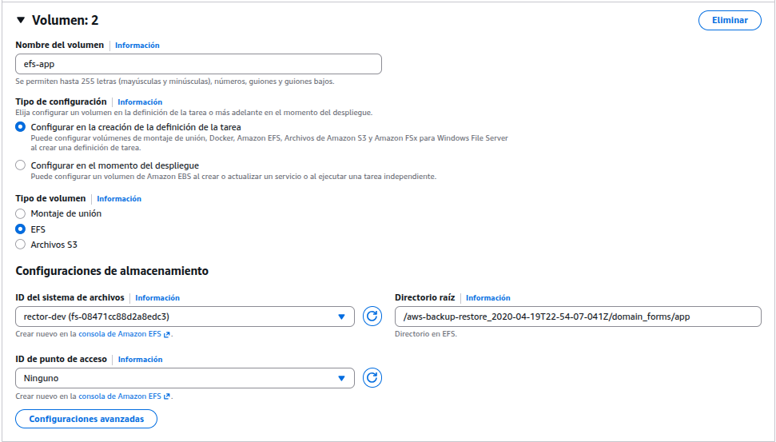
efs-app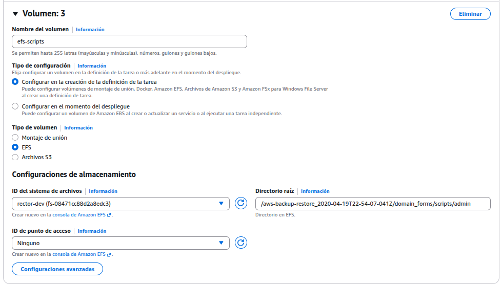
efs-scripts| Volumen | Ruta en el contenedor |
|---|---|
efs-domains | /u01/oracle/user_projects/domains |
efs-app | /u01/oracle/user_projects/apps |
efs-scripts | /u01/oracle/scripts |
…/dc, …/ap).
Deben ser exactamente …/domains y …/apps (plural).
Crear / crear revisión. La captura corresponde a la revisión forms-admin:6
(la referencia exportada anterior era :5).
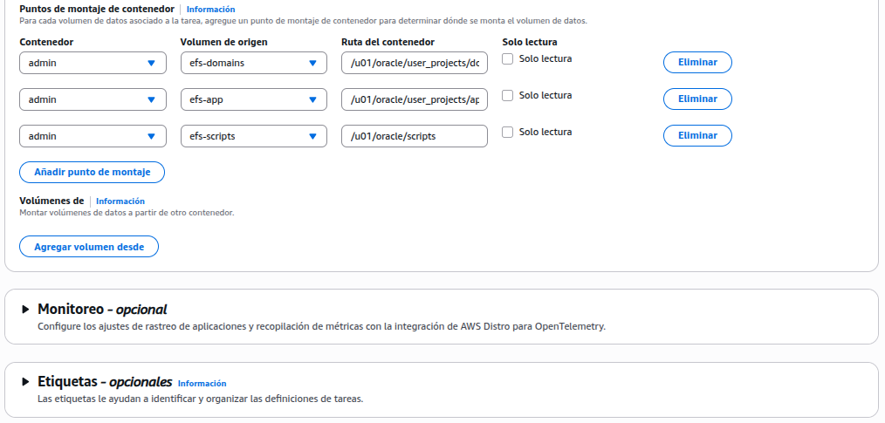
forms-admin, tareas deseadas 1, y Service Discovery con nombre
weblogic-admin (solo se puede fijar en la creación).
ECS → cluster forms_report → pestaña Servicios → Crear.
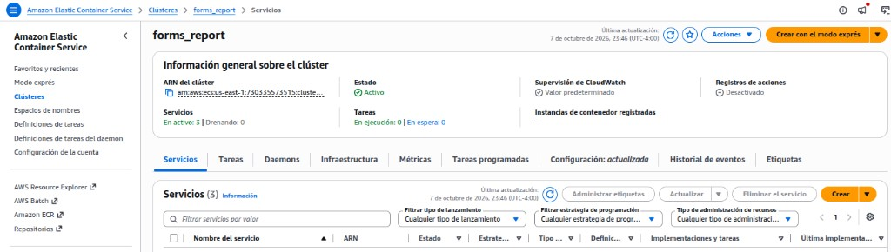
forms_report · Crear servicio| Campo | Valor |
|---|---|
| Familia | forms-admin |
| Revisión | 6 (o la más reciente) |
| Estrategia | REPLICA |
| Tareas deseadas | 1 al crear (en la captura de actualización aparece 0) |
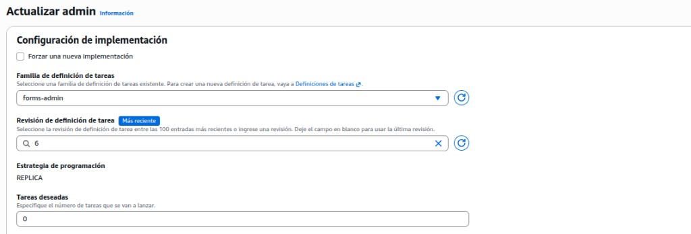
forms-admin:6| Campo | Valor |
|---|---|
| Controlador | ECS |
| Estrategia | Actualización acumulativa (rolling) |
| Mín. tareas en ejecución | 0 % |
| Máx. tareas en ejecución | 200 % |
| Tiempo de incorporación | 0 min |
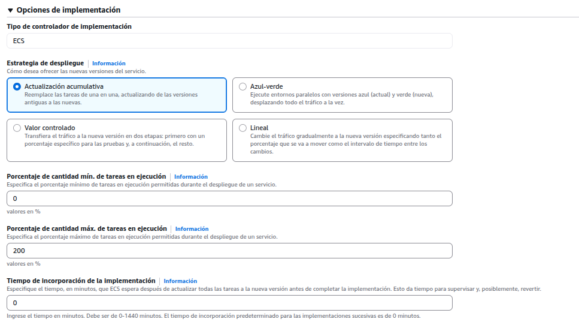
| Campo | Valor |
|---|---|
| Circuit breaker ECS | Activado |
| Restauración de errores | Activada |
| Restablecer cuando esté en buen estado | desactivado |
| Umbral | Porcentaje limitado · 50 |
| Alarma CloudWatch | desactivada |
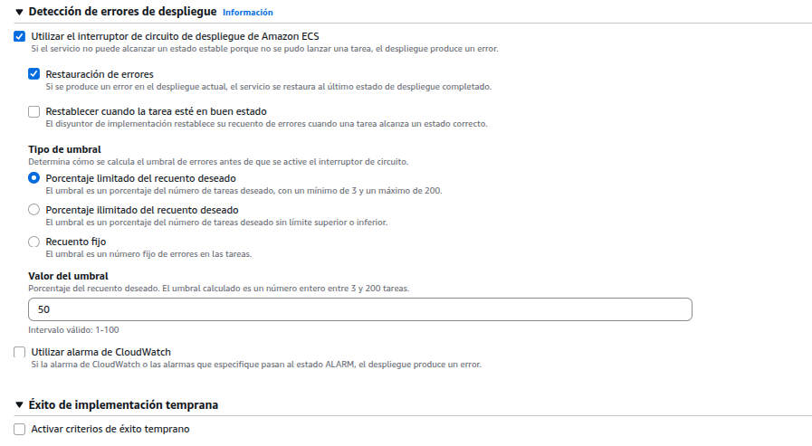
| Campo | Valor |
|---|---|
| Estrategia | Proveedor de capacidad · FARGATE (base 0, peso 1) |
| Versión de plataforma | 1.4.0 |
| ECS Exec | Encendido (requiere el rol del Paso 1.4) |
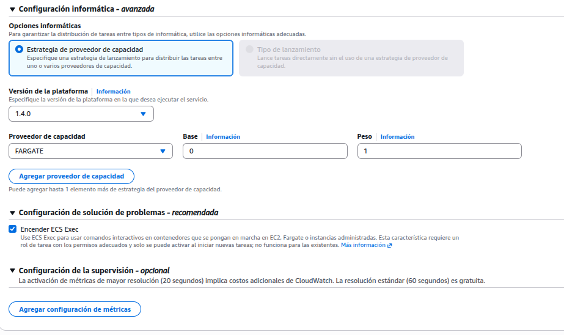
| Campo | Valor |
|---|---|
| Service Connect | desactivado |
| Detección de servicios | Activada |
| Namespace | Existente · forms.local (ns-r3zqawwpjtp5pzue) |
| Nombre de detección | weblogic-admin → FQDN weblogic-admin.forms.local |
| Propagación de estado ECS | Activada |
| Registro DNS | Tipo A · TTL 15 s |
weblogic-admin.
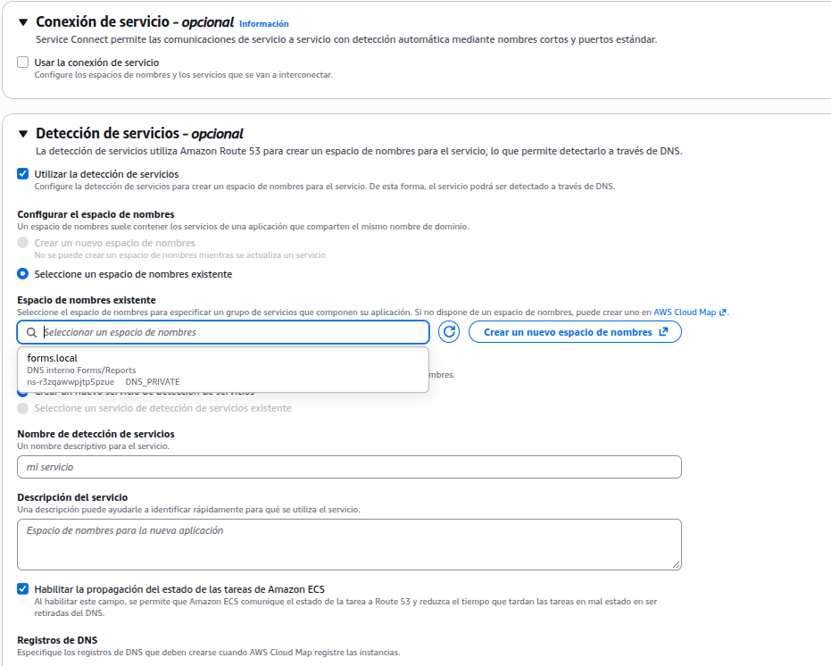
forms.local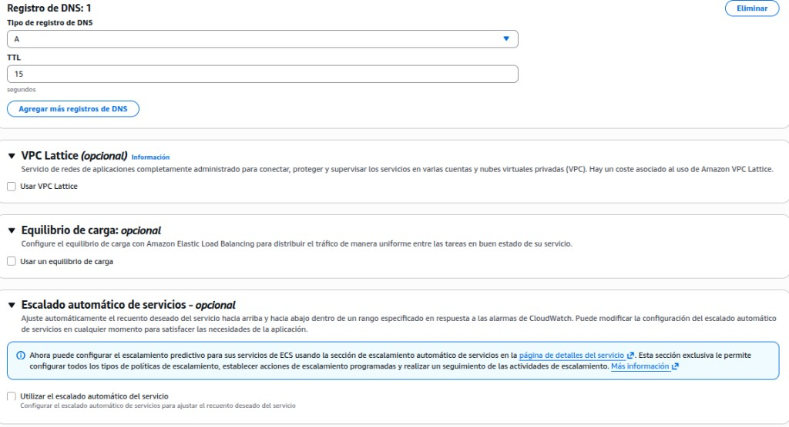
Sin VPC Lattice, sin equilibrador de carga, sin escalado automático, sin etiquetas adicionales. Los volúmenes EFS ya van en la task definition (no se reconfiguran aquí).
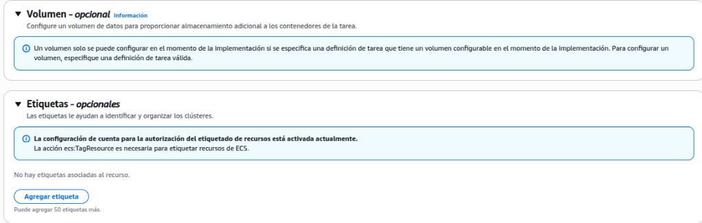
En la sección Redes del servicio (creación o actualización):
| Campo | Valor |
|---|---|
| VPC | vpc-055a4007418b34e64 (vpc-Banesco-Seguros-VE-dev) |
| Subnets | Solo subnet-01212efd4a9ce759b (pub-A-SN · us-east-1a) |
| Security group | sg-0e1787d32bac71fcd (forms-sg-ecs) — quitar default |
| IP pública | Activada (asignar automáticamente a la ENI) |
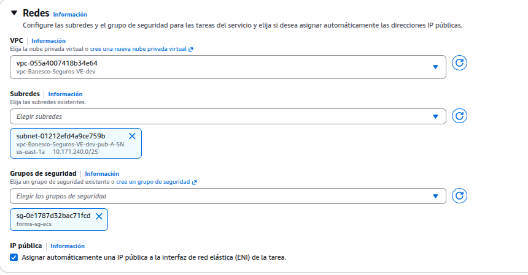
Acceso a Oracle 192.168.229.137: en la tabla de rutas Pub-RT (rtb-0a99542c9d91cd2cc)
debe existir 192.168.229.137/32 → pcx-0ad20c217472c7080.
La primera descarga de la imagen tarda ~5 min. Cuando la tarea esté en Ejecutando, entrar con ECS Exec
(requiere el session-manager-plugin instalado en la máquina local):
aws ecs execute-command \ --cluster forms_report \ --task <TASK_ID> \ --container admin \ --interactive \ --command "/bin/bash"
Dentro del contenedor:
df -h | grep -E 'domains|apps|scripts' ls /u01/oracle/scripts ls /u01/oracle/user_projects/domains getent hosts weblogic-admin.forms.local # debe devolver la IP VPC de la tarea
su - oracle /u01/oracle/scripts/entrypoint_persistente.sh
Validar en /ecs/forms-admin o en los logs del dominio que el AdminServer llega a RUNNING
y abrir http://<IP-pública>:7001/console y /em.
El dominio viene de Docker Compose con short names (weblogic-admin, weblogic-forms,
weblogic-reports). En ECS deben ser FQDN de forms.local. Con AdminServer y managed servers
detenidos, como oracle:
/u01/oracle/scripts/set-cloudmap-hostnames.sh --check # estado actual /u01/oracle/scripts/set-cloudmap-hostnames.sh # respalda y cambia a *.forms.local
| Machine | FQDN | Node Manager |
|---|---|---|
AdminServerMachine | weblogic-admin.forms.local | nodemanager/ |
FormsMachine | weblogic-forms.forms.local | nodemanager_forms/ |
ReportsMachine | weblogic-reports.forms.local | nodemanager_reports/ |
Siguiente fase: crear el contenedor Forms.
export AWS_REGION=us-east-1
export CLUSTER=forms_report
export SERVICE=forms-admin
# Estado del servicio y red asignada
aws ecs describe-services --cluster $CLUSTER --services $SERVICE \
--query 'services[0].{status:status,running:runningCount,td:taskDefinition,net:networkConfiguration}'
# Task definition vigente
aws ecs describe-task-definition --task-definition forms-admin:5 --query 'taskDefinition.containerDefinitions[0]'
# Mount targets del EFS y su SG
aws efs describe-mount-targets --file-system-id fs-08471cc88d2a8edc3
# Permitir NFS 2049 desde el SG de ECS al SG del EFS
aws ec2 authorize-security-group-ingress --group-id sg-0e39a7aa49ff6a22b \
--protocol tcp --port 2049 --source-group sg-0e1787d32bac71fcd
# Forzar un nuevo despliegue tras cambiar la task definition
aws ecs update-service --cluster $CLUSTER --service $SERVICE \
--task-definition forms-admin:5 --force-new-deployment
forms-adminHecho| Atributo | Valor |
|---|---|
| Contenedor | admin |
| CPU / memoria / efímero | 2048 / 4096 / 100 GiB |
| Puertos | 7001, 9002, 5556, 7777, 4443 |
| Comando | ["sleep","infinity"] |
| Volúmenes | efs-domains, efs-app, efs-scripts (scripts/admin) |
| Logs | /ecs/forms-admin |
| Roles | tarea ecs-forms-admin-task-role · ejecución ecsTaskExecutionRole |
Fuente: weblogic_docker_aws/conf_json/forms-admin.json.
Errores encontrados al crear el servicio, en el orden en que aparecieron:
ecs-forms-admin-task-role y una nueva revisión.GetAuthorizationToken … i/o timeout: subnet sin salida a internet o SG default sin egress. Usar solo pub-A, IP pública y forms-sg-ecs.no space left on device al extraer la imagen; subir a 100 GiB.mount.nfs4: Connection timed out: el SG del EFS debe aceptar 2049 desde forms-sg-ecs.No such file or directory: rootDirectory sin el prefijo erróneo /domain.sleep infinity (Paso 3.5) — permite ECS Exec y arranque manual; no redefinir PATH.weblogic-admin.forms.local.pub-A + ruta BD (Paso 4.9–4.10) — no asociar database-A; 192.168.229.137/32 → pcx en Pub-RT.config.xml y nodemanager.properties aparece UnknownHostException.
Documentación ECS AdminServer — capturas en assets/. Ver también ECS Forms y ECS Reports.